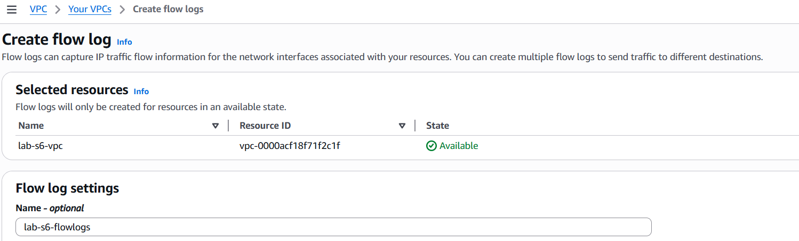
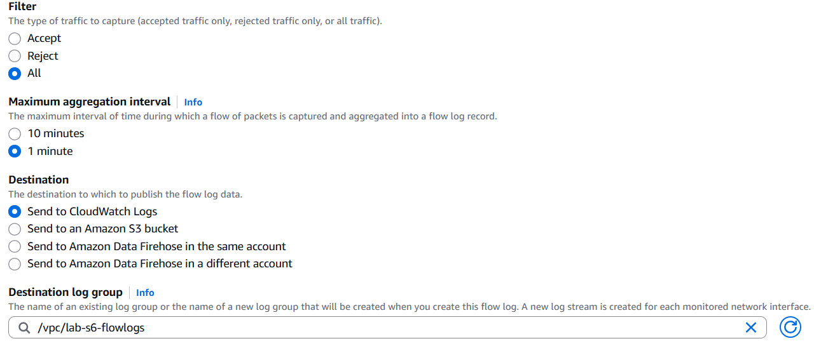
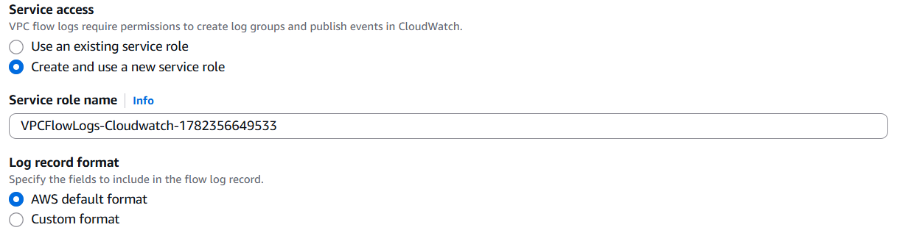
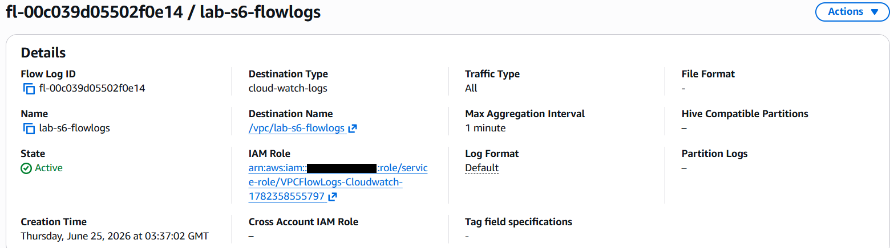
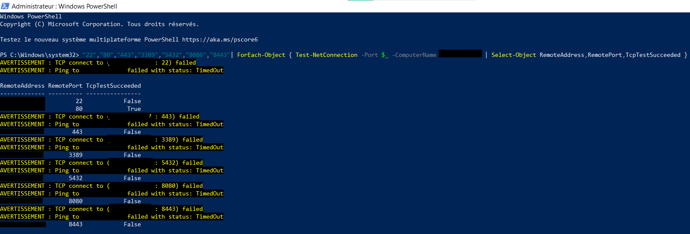
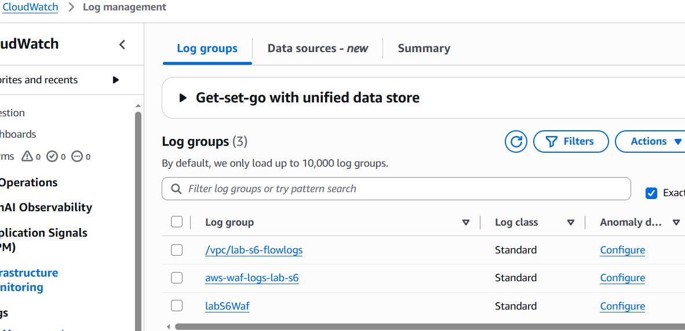
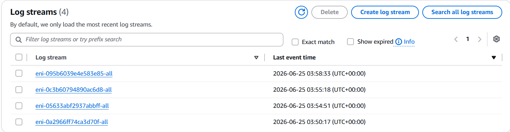
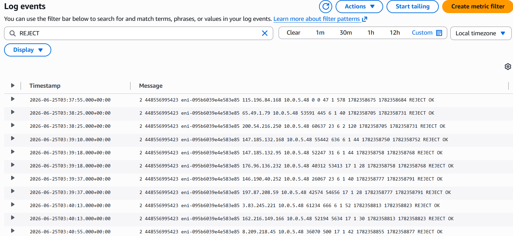
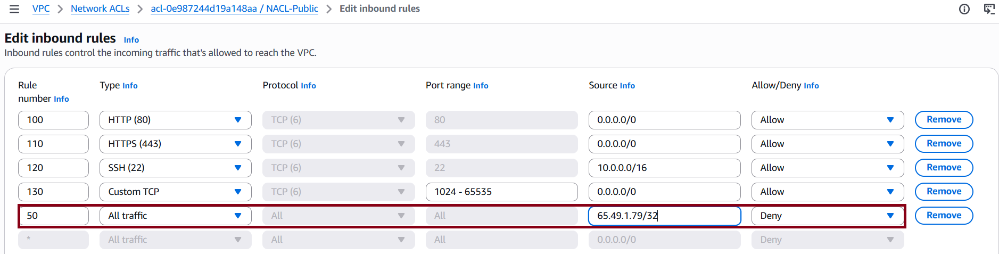

Visibilité complète
Les Flow Logs exposent tout ce qui touche les interfaces réseau du VPC — y compris les tentatives d'accès bloquées qui seraient invisibles sans cette fonctionnalité.
Sécurité Cloud · Surveillance du trafic réseau VPC · Détection d'IP suspectes · Blocage via NACL
Les VPC Flow Logs capturent les métadonnées de tout flux IP traversant les interfaces réseau d'un VPC — connexions acceptées, refusées, ou les deux. Ce lab active les Flow Logs sur le VPC lab-s6-vpc, envoie les données vers CloudWatch Logs pour analyse en temps réel, puis exploite les logs pour identifier une IP malveillante et la bloquer via une règle NACL.
Flow Log ID fl-00c039d05502f0e14
VPC lab-s6-vpc
Destination CloudWatch Logs
Agrégation 1 minute
Créé le 25/06/2026 · 03:37 GMT
Le Flow Log est créé directement depuis la console VPC : Your VPCs → lab-s6-vpc → Flow logs → Create flow log. La ressource surveillée est l'ensemble du VPC vpc-0000acf18f71f2c1f.


| Filtre | All — capture les paquets acceptés ET refusés |
| Agrégation max | 1 minute (granularité maximale) |
| Destination | CloudWatch Logs |
| Log group | /vpc/lab-s6-flowlogs |
Un rôle IAM est créé automatiquement — VPCFlowLogs-Cloudwatch-1782356649533 — avec les permissions nécessaires pour écrire dans CloudWatch Logs. Le format retenu est AWS Default qui inclut les champs essentiels : version, account-id, interface-id, srcaddr, dstaddr, srcport, dstport, protocol, packets, bytes, start, end, action, log-status.


| Flow Log ID | fl-00c039d05502f0e14 |
| État | ✔ Active |
| Destination Type | cloud-watch-logs |
| Destination | /vpc/lab-s6-flowlogs |
| Traffic Type | All |
| Max Aggregation Interval | 1 minute |
| Log Format | Default |
Un test multi-ports est lancé depuis PowerShell pour générer du trafic vers l'EC2 web-server — à la fois des connexions autorisées (port 80) et des tentatives refusées (tous les autres ports). Ces tentatives alimenteront les Flow Logs avec des entrées ACCEPT et REJECT.

| Port testé | Service | Résultat TCP | Entrée Flow Log attendue |
|---|---|---|---|
| 22 | SSH | False | REJECT — SSH non autorisé depuis Internet |
| 80 | HTTP | True | ACCEPT — port ouvert par SG-Web |
| 443 | HTTPS | False | REJECT — pas de certificat SSL configuré |
| 3389 | RDP | False | REJECT — non autorisé |
| 5432 | PostgreSQL | False | REJECT — BDD isolée en subnet privé |
| 8080 | Backend API | False | REJECT — non exposé sur subnet public |
| 8443 | HTTPS alt | False | REJECT — non autorisé |
Trois groupes de logs sont présents dans CloudWatch — les Flow Logs VPC et deux groupes liés au WAF (AWS WAF sera traité séparément).

Dans le group /vpc/lab-s6-flowlogs, CloudWatch crée automatiquement un log stream par interface réseau (ENI) surveillée. Les 4 ENIs du VPC génèrent leurs propres flux de logs.

En filtrant les événements avec le mot-clé REJECT, toutes les tentatives de connexion bloquées remontent. Plusieurs IPs externes ont tenté de se connecter à l'EC2 10.0.5.48 sur des ports non autorisés — notamment des scans ICMP (protocole 1), des connexions HTTPS sur le port 445 (SMB over HTTPS, typique des scanners automatisés), et d'autres tentatives sur des ports éphémères.

Chaque ligne suit le format AWS Default. Voici le décodage d'un enregistrement réel issu des logs :
| Champ | Valeur | Signification |
|---|---|---|
| srcaddr | 65.49.1.79 | IP source — Internet (IP suspecte) |
| dstaddr | 10.0.5.48 | IP destination — EC2 web-server |
| dstport | 445 | Port ciblé — SMB (Microsoft) — typique des scanners |
| protocol | 6 | TCP |
| action | REJECT | Connexion bloquée par SG-Web / NACL-Public |
L'IP 65.49.1.79 apparaît plusieurs fois dans les logs avec des tentatives sur le port 445 (SMB) — un indicateur classique de scanner automatisé ou de bot malveillant. Une règle de blocage explicite est ajoutée dans NACL-Public pour rejeter tout trafic de cette IP avant même qu'il n'atteigne les Security Groups.

| Règle # | Type | Port | Source | Action | Raison |
|---|---|---|---|---|---|
| 50 | All traffic | All | 65.49.1.79/32 | Deny | IP identifiée dans les logs — scanner SMB/port 445 |
| 100 | HTTP (80) | 80 | 0.0.0.0/0 | Allow | Accès web public |
| 110 | HTTPS (443) | 443 | 0.0.0.0/0 | Allow | Accès web sécurisé |
| 120 | SSH (22) | 22 | 10.0.0.0/16 | Allow | Admin VPC uniquement |
| 130 | Custom TCP | 1024–65535 | 0.0.0.0/0 | Allow | Ports éphémères |
| * | All traffic | All | 0.0.0.0/0 | Deny | Default Deny implicite |
Pourquoi la règle 50 et pas 99 ? Les règles NACL sont évaluées dans l'ordre croissant et s'arrêtent à la première correspondance. En attribuant le numéro 50 à la règle Deny, on s'assure qu'elle est évaluée avant les règles Allow (100, 110, 130). Si on avait mis 150, l'IP aurait d'abord matché la règle Allow sur le port 80 avant d'être bloquée — la NACL l'aurait laissée passer.
Les Flow Logs exposent tout ce qui touche les interfaces réseau du VPC — y compris les tentatives d'accès bloquées qui seraient invisibles sans cette fonctionnalité.
Le filtre REJECT dans CloudWatch permet de repérer en quelques secondes des patterns suspects : scans de ports, bots automatisés, tentatives sur des ports fermés.
La NACL constitue le mécanisme de blocage le plus efficace — elle agit au niveau subnet, avant que le trafic n'atteigne les Security Groups ou les instances EC2.
Ce lab illustre un cycle SOC cloud minimal : Flow Logs (détection) → CloudWatch (analyse) → NACL (réponse). En production, cette boucle peut être automatisée via Lambda ou AWS Security Hub.